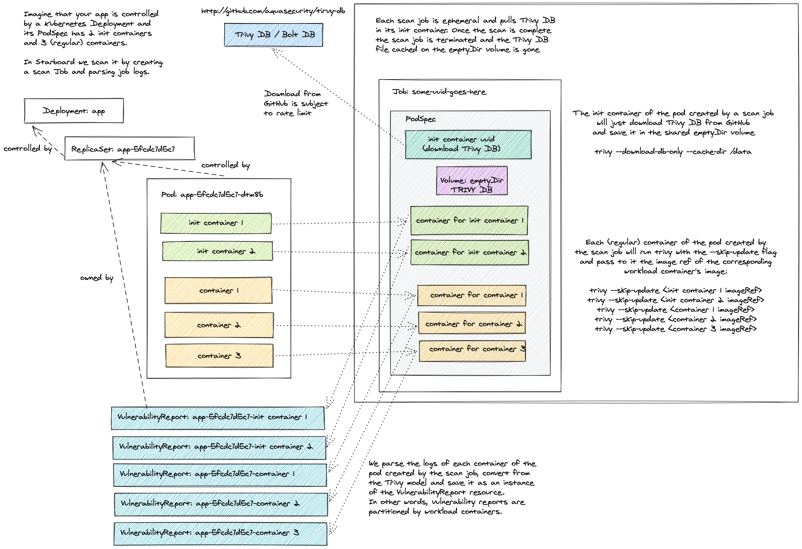

Integrations
Vulnerability Scanners

Trivy Standalone
The default configuration settings enable Trivy vulnerabilityReports.scanner in Standalone
trivy.mode. Even though it doesn't require any additional setup, it's the least efficient method. Each pod created
by a scan job has the init container that downloads the Trivy vulnerabilities database from the GitHub releases page
and stores it in the local file system of an emptyDir volume. This volume is then shared with the main
containers that perform the actual scanning. Finally, the pod is deleted along with the emptyDir volume.

The number of containers defined by a scan job equals the number of containers defined by the scanned Kubernetes workload, so the cache in this mode is useful only if the workload defines multiple containers.
Beyond that, frequent downloads from GitHub might lead to a rate limiting problem. The limits are
imposed by GitHub on all anonymous requests originating from a given IP. To mitigate such problems you can add the
trivy.githubToken key to the starboard secret.
GITHUB_TOKEN=<your token>
kubectl patch secret starboard -n <starboard_namespace> \
--type merge \
-p "$(cat <<EOF
{
"data": {
"trivy.githubToken": "$(echo -n $GITHUB_TOKEN | base64)"
}
}
EOF
)"
Trivy ClientServer
You can connect Starboard to an external Trivy server by changing the default trivy.mode from
Standalone to ClientServer and specifying trivy.serverURL.
TRIVY_SERVER_URL=<your server URL>
kubectl patch cm starboard -n <starboard_namespace> \
--type merge \
-p "$(cat <<EOF
{
"data": {
"trivy.mode": "ClientServer",
"trivy.serverURL": "$TRIVY_SERVER_URL"
}
}
EOF
)"
The Trivy server could be your own deployment, or it could be an external service. See Trivy documentation
for more information on deploying Trivy in ClientServer mode.
If the server requires access token and / or custom HTTP authentication headers, you may add trivy.serverToken
and trivy.serverCustomHeaders properties to the starboard secret.
SERVER_TOKEN=<your server token>
X_API_TOKEN=<your API token>
kubectl patch secret starboard -n <starboard_namespace> \
--type merge \
-p "$(cat <<EOF
{
"data": {
"trivy.serverToken": "$(echo -n $SERVER_TOKEN | base64)",
"trivy.serverCustomHeaders": "$(echo -n x-api-token:$X_API_TOKEN | base64)"
}
}
EOF
)"
Aqua
You can use Aqua's commercial scanner to scan container images and generate vulnerability reports. The Starboard
connector for Aqua attempts to fetch the vulnerability report for the specified image digest via Aqua's API.
If the report is not found, it spins up an ad-hoc scan by executing the scannercli command.
The value of aqua.imageRef determines the version of the actual scannercli binary executable and must be
compatible with the version of your Aqua deployment. By default, scannercli 5.3 is used, but if you are running,
for example, Aqua 5.2, change the value to docker.io/aquasec/scanner:5.2.
To integrate Aqua scanner change the value of the vulnerabilityReports.scanner property to Aqua and specify
the aqua.serverURL:
AQUA_SERVER_URL=<your console URL>
kubectl patch cm starboard -n <starboard_namespace> \
--type merge \
-p "$(cat <<EOF
{
"data": {
"vulnerabilityReports.scanner": "Aqua",
"aqua.serverURL": "$AQUA_SERVER_URL"
}
}
EOF
)"
Finally, edit the starboard secret to configure aqua.username and aqua.password credentials, which are used
to connect to the Aqua's management console:
AQUA_CONSOLE_USERNAME=<your username>
AQUA_CONSOLE_PASSWORD=<your password>
kubectl patch secret starboard -n <starboard_namespace> \
--type merge \
-p "$(cat <<EOF
{
"data": {
"aqua.username": "$(echo -n $AQUA_CONSOLE_USERNAME | base64)",
"aqua.password": "$(echo -n $AQUA_CONSOLE_PASSWORD | base64)"
}
}
EOF
)"
Private Registries
Image Pull Secrets
- Find references to image pull secrets (direct references and via service account).
- Create the temporary secret with basic credentials for each container of the scanned workload.
- Create the scan job that references the temporary secret. The secret has the ownerReference property set to point to the job.
- Watch the job until it's completed or failed.
- Parse logs and save vulnerability reports in etcd.
- Delete the job. The temporary secret will be deleted by the Kubernetes garbage collector.
Managed Registries
Amazon Elastic Container Registry (ECR)
You must create an IAM OIDC identity provider for your cluster:
eksctl utils associate-iam-oidc-provider \
--cluster <cluster_name> \
--approve
Assuming that the operator is installed in the <starboard_operator_namespace>
namespace you can override the existing starboard-operator service account and
attach the IAM policy to grant it permission to pull images from the ECR:
eksctl create iamserviceaccount \
--name starboard-operator \
--namespace <starboard_operator_namespace> \
--cluster <cluster_name> \
--attach-policy-arn arn:aws:iam::aws:policy/AmazonEC2ContainerRegistryReadOnly \
--approve \
--override-existing-serviceaccounts